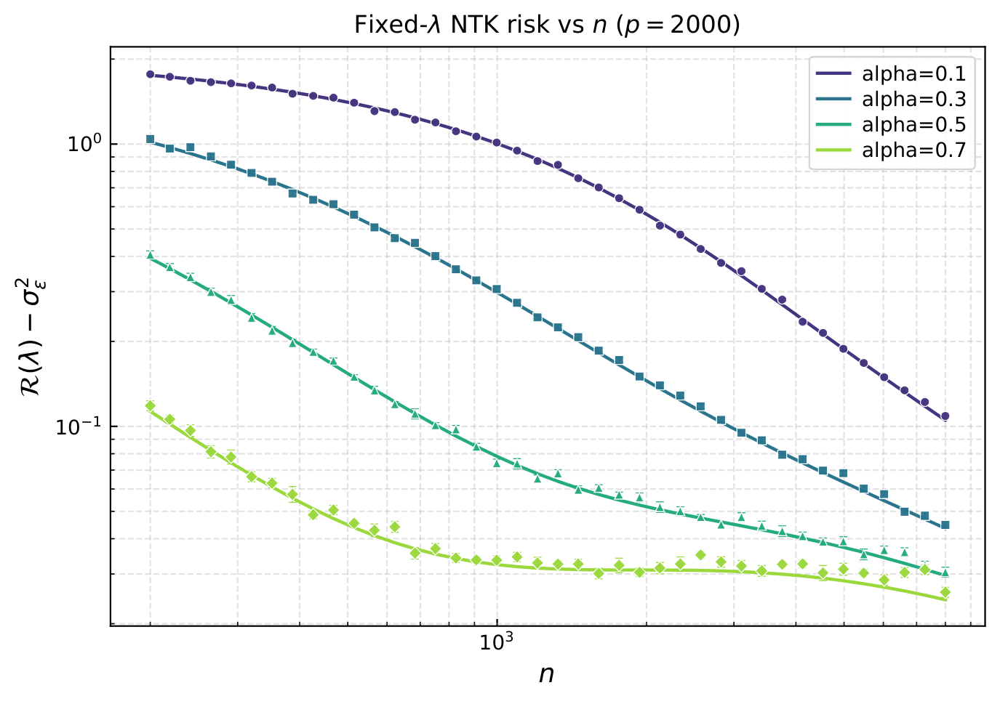
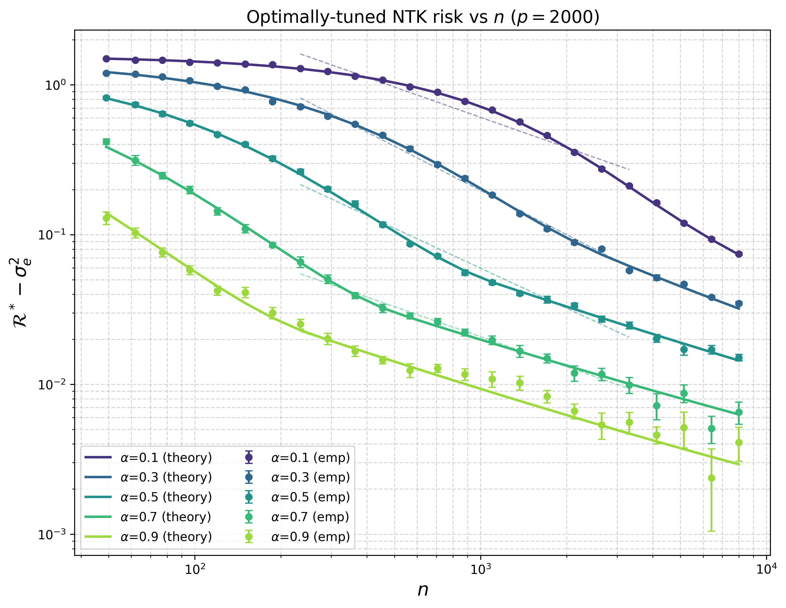

PhD, Mathematics and Statistics — UC San Diego. Random matrix theory and high-dimensional probability applied to the theory of deep learning. Most recently a data science intern at Cotality.
My research is in the theory of deep learning, with a primary focus on applying tools from Random Matrix Theory and high dimensional probability to better understand the behavior of neural networks and kernel models. I defended my PhD thesis in Mathematics with a speciliaztion in Statistics at UC San Diego in June 2026, under the supervision of Professor Todd Kemp. My thesis led to two papers, one of which was published at the Conference of Learning Theory (COLT) 2026, and the other is currently under review. My research has been supported by the National Science Foundation (NSF).
Understanding the generalization behavior of over-parameterized neural networks remains an active an open area of research in deep learning theory. An especially productive line of work proceed by \emph{linearizing} the network around its random initialization, leading to the Neural Tangent Kernel (NTK) model. My research focused on theoretical predictions of performance of NTK regression under general data assumptions, and the development of a new framework to analyze the asymptotic spectral behavior of the NTK under a nonlinearly seperable dataset. The following are two plots taken from ``NTK Regression under dual power-law model: Deterministic Equivalents via SDE and PDE Methods'' (under review, 2026), which illustrate the theoretical predictions for the risk of NTK regression under a dual power-law covariance model.


Built an internal AI agent to automate filing of Cotality's predictive models under state insurance regulations. Used Google ADK to design a graph workflow agent, which grounded answers with RAG (Vertex AI) and MCP servers.
Worked with top AI labs to create and evaluate novel mathematical tasks that were used to assess and fine-tune performance of large language models (LLMs) in mathematical reasoning.
Advised by Professor Todd Kemp. TA for probability, linear algebra, real analysis, and a summer SLMath course covering deep learning theory, multidimensional scaling, and reinforcement learning.